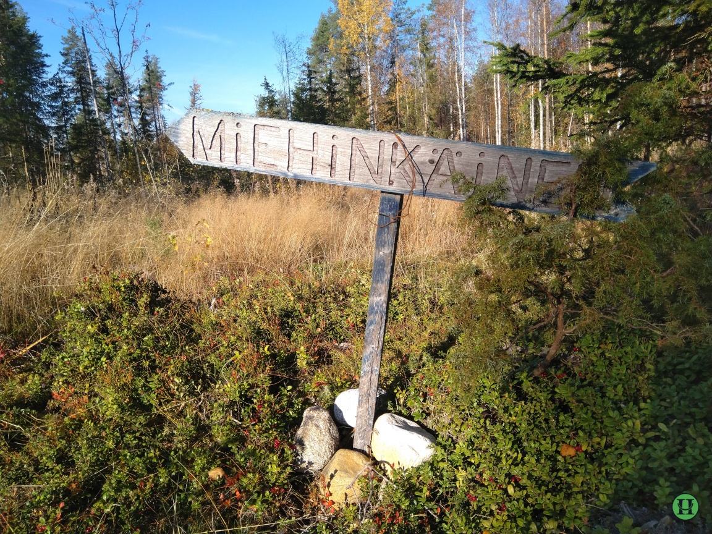

Uuraisilta ajetaan Kintaudentietä (6250) Höytiälle. Noin 0,5 km Höytiän jälkeen käännytään oikealle (Kotaperä, Kaijantie). Ajetaan 5,3km ja käännytään oikealle (Talkoovuoret). Parkkipaikka on noin kilometrin päässä.
Miehinkäisen lintutorni on maakunnankuulu lintutorni. Sinne löytää helposti. Opasteet luontopolulle alkavat Kintaudentieltä ja Kaijantieltä on opaste parkkipaikalle. Parkkipaikalla on vaatimaton laavu. Parkkipaikka on luontopolun lähtöpiste. Samasta paikasta lähtee myös polku Talkoovuorille. Molemmat polut ovat n.1,5km pitkiä.
Miehinkäisen lintutornille vievä polku on melko helppokulkuinen. Reitti on merkitty maastoon sinisillä täplillä. Polku kulkee suo- ja lampimaisemissa. Miehinkäisen rannalla maasto on märkää ja saappaat ovat tarpeen.
Takaisin Miehinkäisen luontopolkuun tässä.
Kohta ...
Takaisin Miehinkäisen luontopolkuun tässä.
Takaisin kartalle tässä.
Uuraisten sivut on tässä.